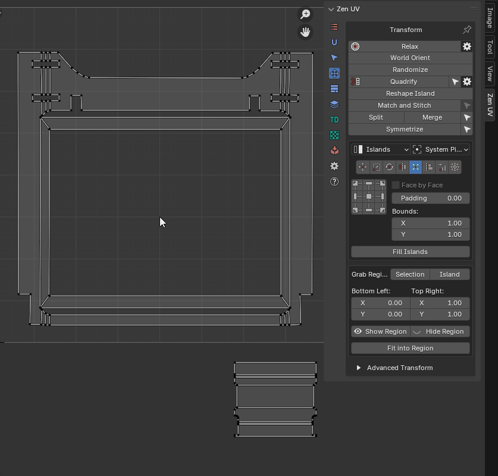
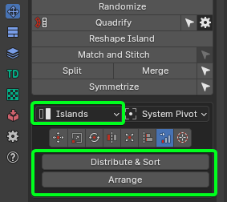
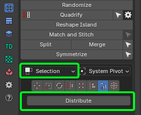
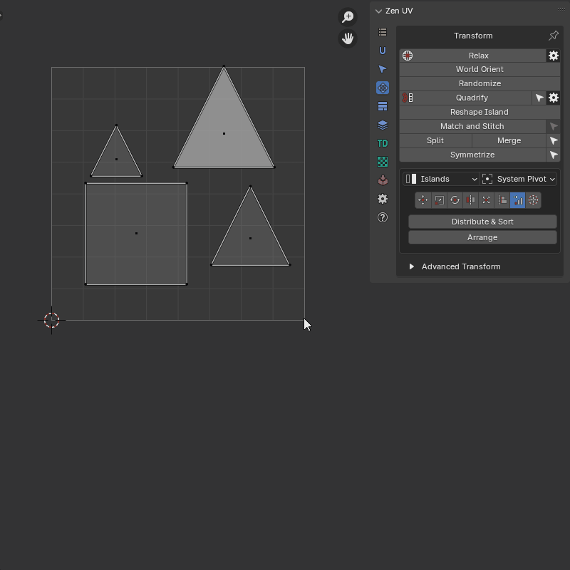
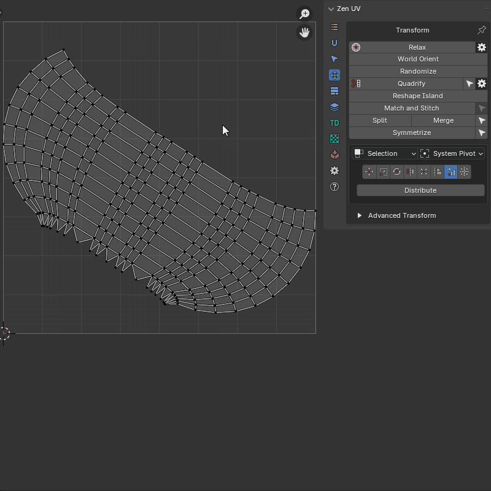
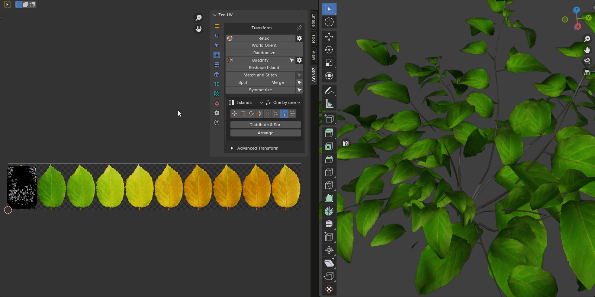

Unified Transform System
Panel

Universal Control Panel
Control
Universal Control Panel
{kind=link}
The universal control panel has logic and different functions for different types of transformation.
Transform Space
Switch between Islands and Texure-based transforms in 3D View.
Panel
{kind=link}
- Island. Islands-based transforms.
- Texture. Texure-based transforms. Works only for Move and Rotate tools.
Mode
Panel
{kind=link}
- Islands. Transformations will affect Islands.
- Selection. Transformation will affect Selection (Faces, Edges, Vertices).
Order
Panel
{kind=link}
- One by one. Transformations will affect Islands.
- Overall. Transformation will affect Selection (Faces, Edges, Vertices).
- System Pivot. Transformations will affect Islands.
Transform Types
Move
 Move Selected Islands
Move Selected Islands
Info
Buttons of the Universal Control Panel in the Transform type Move represent the direction of shifting.
{kind=link}
- Move Increment - The value on which the island will be shifted
- Grab Increment - Get the distance between two vertices or edge lengths and use it as the offset value for the move. The resulting value will be used as the Move Increment value
Scale
 Scale selected Islands
Scale selected Islands
Info
Buttons of the Universal Control Panel in the Transform type Scale represent Points from where the island will be scaled.
{kind=link}
Scale Mode
Axis
{kind=link}
- Scale - The value of the scale of the island for each of the axes.
- Tuner - System that helps change values quickly.
- “D” - Increase by two times.
- “H” - Decrease two times.
- “R” - Reset value to 1.0 .
- Lock. - The Lock mode allows changing values as one.
Units
{kind=link}
- UV Size - The estimated width of the UV area.
- Desired size - The size of which should be set for selected elements relative to UV area.
- G - Grab the desired size from the current selection. Exist only in the 3D Viewort context. Can be used only for 2 vertices or for one edge selection.
- Horizontal / Vertical - What mean the desired size.
Rotate
 Rotate selected Islands
Rotate selected Islands
Info
Buttons of the Universal Control Panel in the Transform type Rotate works as described below.
- Buttons located in the corners rotate the island in the specified direction.
- The central button performs the automatic aligning of the island horizontally or vertically.
- The buttons at the top and bottom align the island vertically.
- Buttons on the left and right align the island horizontally.
{kind=link}
- Rotate Increment - The value on which the island will be rotated
- Select Island by Direction - Select island by direction (Horizontal, Vertical, Radial, Not Aligned). Here is a full description of the operator
- Orient by selected - Reorient the island by selected elements (vertices, edges, faces)
Flip
 Flip Selected Islands
Flip Selected Islands
Info
Buttons of the Universal Control Panel in the Transform type Flip represent flip direction.
{kind=link}
- Always Center - Always use the center of the island as a flipping pivot
Fit
 Fit Island to UV Square
Fit Island to UV Square
Info
Buttons of the Universal Control Panel in the Transform type Fit represent origins from where Fit will be performed
{kind=link}
- Face by Face - Fit Face by Face
- Padding - Clearance between island and UV Square bounds
- Bounds - It makes it possible to fill out not UV Square but any other area
- Fill Islands - Fit Islands from the center without keeping proportions
Fit into Region
Properties
{kind=link}
- Grab Region: Selection / Island - Allow to grab Region size in different manners
- Bottom Left: Top Right: - The bounding box of the region
- Show Region - Show region using Annotations
- Hide Region - Hide Fit region
- Fit into Region - Fit the selected island into the Region described in the bounding box
 |
|---|
| Using fit region |
{kind=link}
Align
 Align selected Islands
Align selected Islands
Info
Buttons of the Universal Control Panel in the Transform type Align represent the side by which the islands will be aligned.
{kind=link}
- Vertex by Vertex - Mode for vertex alignment. Aligns vertex by vertex. Transform selection mode only
- Center by Axis - Align selected islands horizontally or vertically in the center
- Align to - Relative to what to perform the alignment
- Selection Bounding Box
- UV Area Bounds
- Position
- 2D Cursor
- To Active Component
- Active UDIM tile - To active UDIM tile
- Tile Number - To UDIM tile with the specified number
Distribute
 Distribute, Sort and Arrange selected Islands
Distribute, Sort and Arrange selected Islands
 |
 |
|---|---|
| Islands mode | Selection mode |
{kind=link}
{kind=link}
-
Islands Mode:
- Distribute & Sort - Distributes and Sorts selected Islands
- Arrange - Arrange selected Islands
-
Selection Mode:
- Distribute - Distribute vertices along the line
Distribute And Sort
Distributes and sorts selected islands
Properties
{kind=link}
- Direction Axis - The axis along which distribution will take place
- Start Point Offset - Islands location start point
- Sort by - Sorting condition
- UV Position
- UV Area
- Mesh Area
- Texel Density
- UV Coverage
- Island Mesh Position X
- Island Mesh Position Y
- Island Mesh Position Z
- Reverse - Change the sorting direction to reverse
- Margin - Distance between distributed Islands
- In Place - Leave not active axis as is
 |
|---|
| Distribute And Sort example |
{kind=link}
Distribute vertices
Distribute vertices along the line
Properties
{kind=link}
- Orient Loop Along - Alignment options
- In Place - The beginning and end of the loop remain in place
- U Axis - Along U axis
- V Axis - Along V axis
- Auto - Will be aligned to the closer axis
- Reverse Direction - Change the direction of the aligned line
- Spacing - How to create spaces between points
- UV - Like in the current uv positions
- Geometry - Like in the mesh
- Evenly - Spread evenly
- Start Positions - Position of starts of loops
- As Is
- Max
- Averaged
- Min
- Lock - Locks start and end positions
- End Positions - Position of ends of loops
- As Is
- Max
- Averaged
- Min
 |
|---|
| Distribute Verts example |
{kind=link}
Arrange Islands
Organizes selected UV islands into a structured grid layout with precise control over row/column density, container bounds, scaling, and distribution origins.
This operator is ideal for organizing repeating modular assets, atlas components, or tidying up scattered UV islands into predictable array layouts.
Properties
{kind=link}
- Grid Settings (U / V) — Sets the total number of columns (U) and rows (V) in the arrangement grid.
- Area Size (X / Y) — Defines the overall width and height dimensions of the grid container (e.g.,
1.0x1.0corresponds to a single UV tile). - Start From — Defines the origin reference point from which the grid array is constructed:
- In Place — Builds the grid starting from the current location of the primary UV island.
- UV Area — Anchors the grid start at the
(0, 0)origin coordinate of the UV space. - Cursor — Places the starting origin directly at the 2D UV Cursor position.
- Offset (X / Y) — Shifts the entire grid layout along the U and V axes.
- Scale Global — Scales the entire grid, proportionally adjusting both island sizes and inter-island spacing.
- Scale Island — Scales each island individually around its local origin without changing grid cell positions.
- Randomize — Adds random positional jitter to islands within their grid placements.
- Seed — Randomization seed value controlling island distribution jitter when Randomize is enabled.
 |
|---|
| Arrange Islands example |
{kind=link}
2D Cursor
Align 2D Cursor over the selected island
{kind=link}
Info
Buttons of the Universal Control Panel in the Transform type 2D Cursor represent sides of the island or selected elements.
{kind=link}